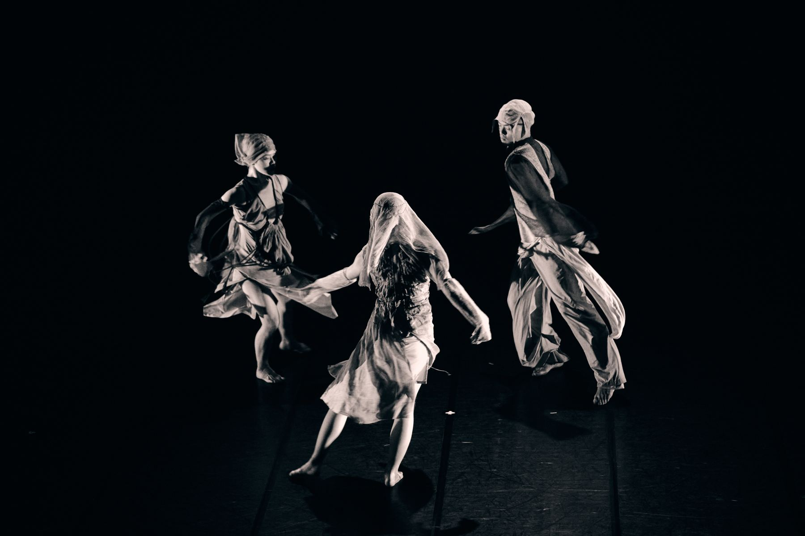
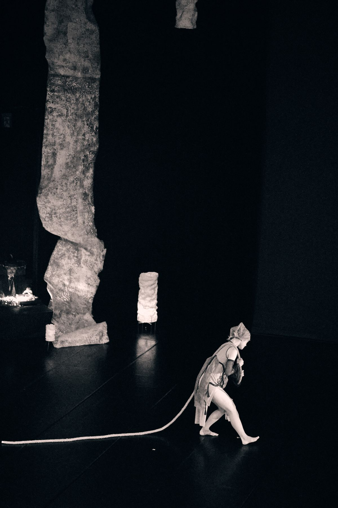
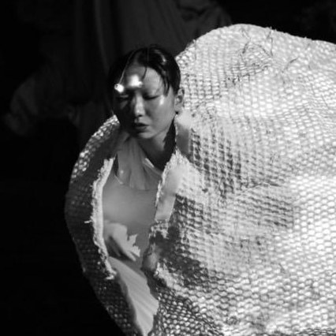
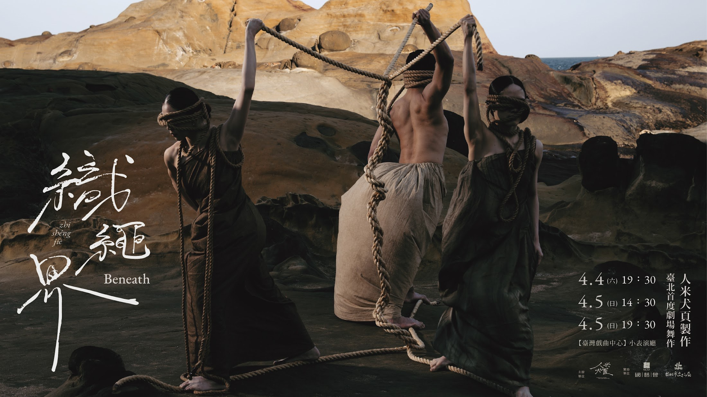
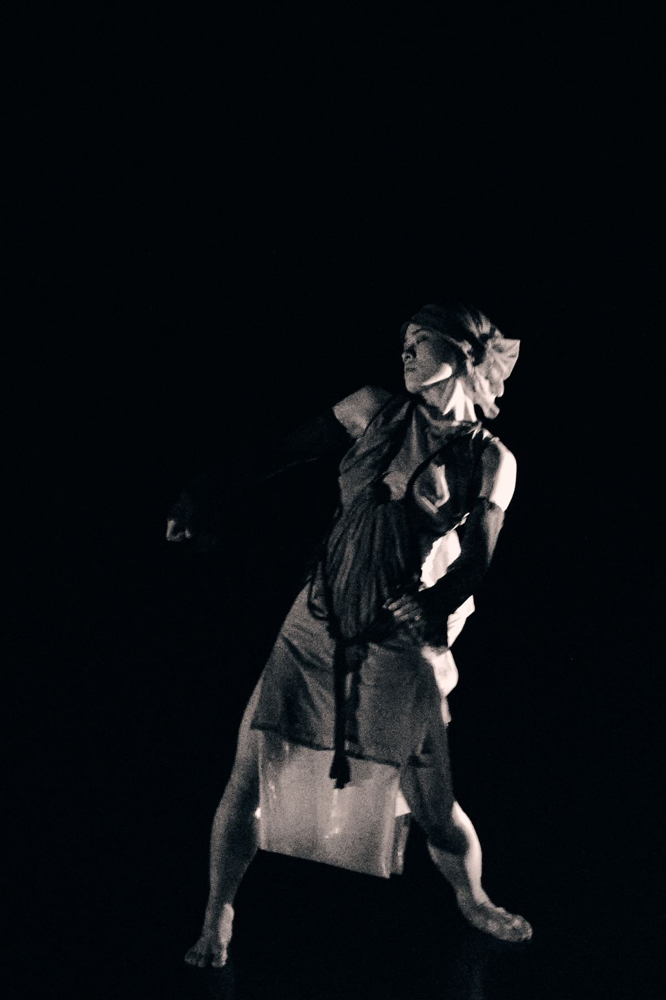
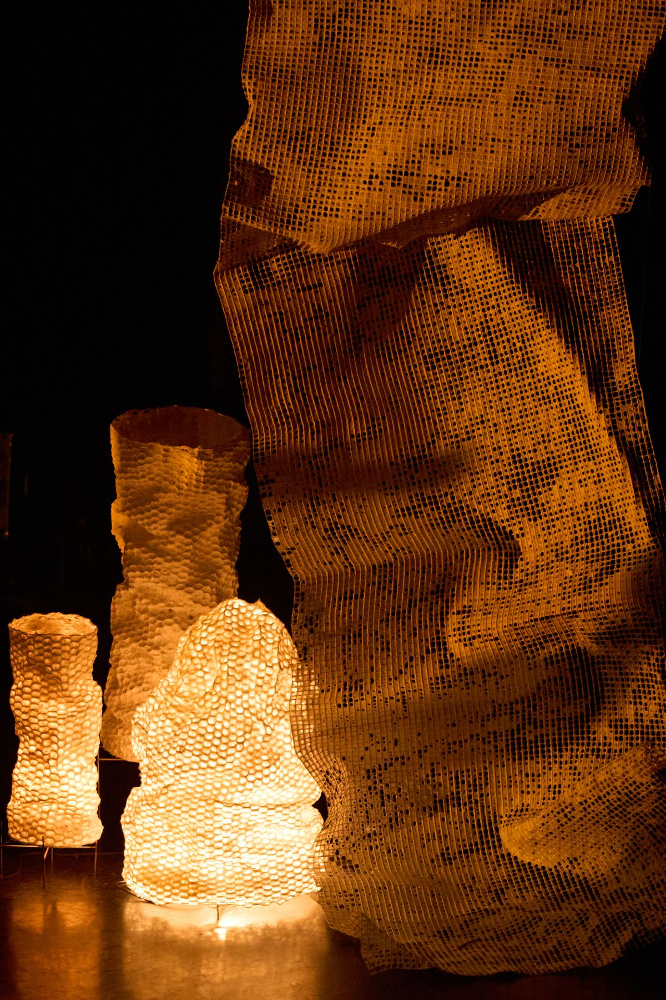
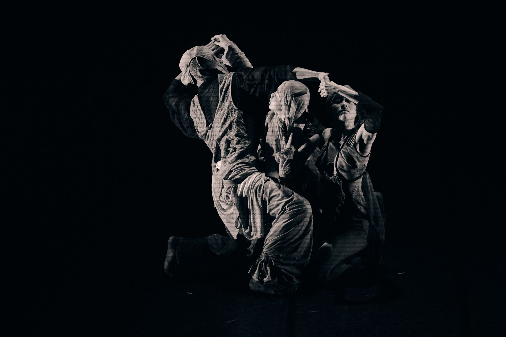

《織繩界 Beneath》
2026 劇場舞作。以繩、身體、聲響與黑盒空間交織出介於儀式與當代劇場之間的觀看經驗。

Pudgala Body & Sound Production
台灣當代舞蹈團隊。以身體、聲音與場域為創作核心，發展劇場舞作、現地製作與跨域表演。
LATEST / 焦點
2026 劇場舞作。以繩、身體、聲響與黑盒空間交織出介於儀式與當代劇場之間的觀看經驗。
2025 白晝之夜節目。由 2024 臺北藝穗節《花蟲弄》延伸，將昆蟲、蛹與城市夜間感知推向大型節慶場域。


ABOUT / 舞團介紹
人米犬頁製作由舞蹈家、編舞家王育羚發起，2020 年以《虎刺梅》首次亮相，2024 年正式立案。團隊以當代舞蹈為核心，結合聲音、即興演出、服裝、裝置與場域創作，發展帶有儀式感與感官密度的作品。
作品多從地方記憶、自然意象與身體經驗出發，在傳統與當代之間尋找新的觀看方式。從神社、老宅到黑盒劇場與城市夜間，團隊持續以舞蹈回應空間，也讓空間反過來改變身體。
SUPPORT / 支持與贊助
邀請團隊進行劇場演出、節慶節目、開幕演出、現地製作或跨域合作。
支持新作排練、劇照影像、服裝裝置、場地與技術製作，讓作品能被完整發展與保存。
透過人嶼延伸身體訓練、感知開發、即興與創作工作坊，讓團隊方法進入更多日常現場。
RENYU / 教學平台

人嶼為人米犬頁製作延伸出的教學平台，整理團隊在創作現場累積的身體覺察、即興、聲音與場域感知方法，發展為課程與工作坊。
IMAGES




CONTACT
歡迎與人米犬頁製作聯繫，討論劇場作品、公共藝術、節慶開幕、場域計畫、身體工作坊與合作提案。